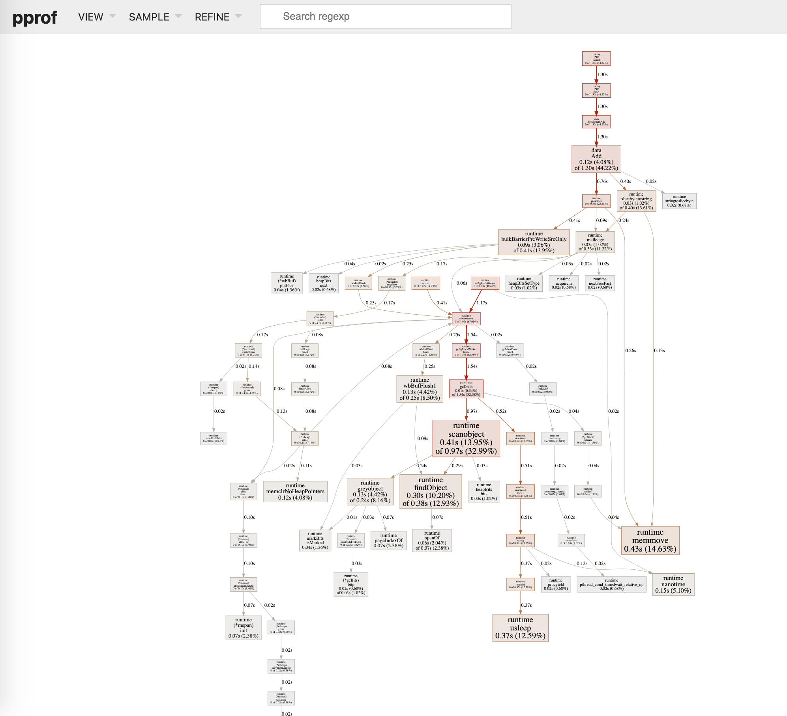
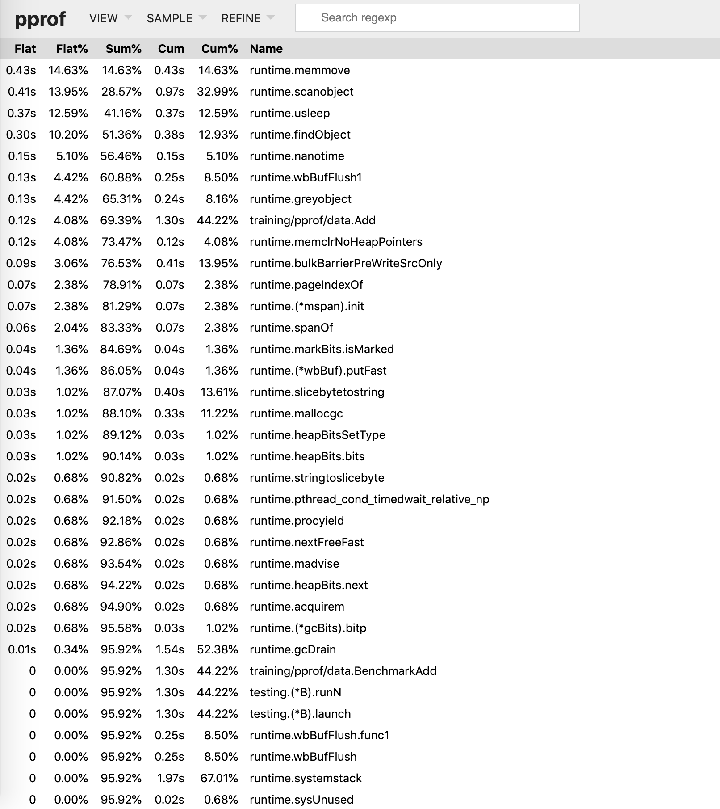
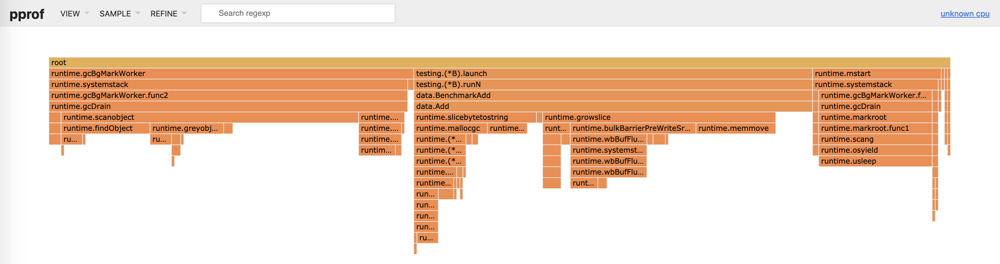

PProf
pprof 是用于可视化和分析性能分析数据的工具，以 profile.proto 读取分析样本的集合，并生成报告以可视化并帮助分析数据（支持文本和图形报告）
profile.proto 是一个 Protocol Buffer v3 的描述文件，它描述了一组 callstack 和 symbolization 信息， 作用是表示统计分析的一组采样的调用栈，是很常见的 stacktrace 配置文件格式
涉及的工具包有：
-
runtime/pprof：采集程序（非 Server）的运行数据进行分析
-
net/http/pprof：采集 HTTP Server 的运行时数据进行分析（只是使用runtime/pprof包来进行封装，并在http端口上暴露出来）
#web服务器: import ( "net/http" _ "net/http/pprof" ) #一般应用程序(实际应用无web交互) import ( "net/http" _ "runtime/pprof" )
使用工具命令bench在源文件目录生成性能采样文件，然后通过pprof工具交互式分析采样文件
go test -bench . -cpuprofile cpu.pprof
## 运行如下会出现交互式命令窗口，可以通过输入help命令获取帮助
## 最简单的方式是输入web，会生成一张svg格式的树形结构图（需要安装Graphviz工具）
go tool pprof cpu.pprof
(pprof) web
采样范围
- CPU Profiling：采集程序的 CPU 使用情况，按照一定的频率采集所监听的应用程序 CPU（含寄存器）的使用情况，可确定应用程序在主动消耗 CPU 周期时花费时间的位置
- Memory Profiling：采集程序内存使用情况，在应用程序进行堆分配时记录堆栈跟踪，用于监视当前和历史内存使用情况，以及检查内存泄漏
- Block Profiling：阻塞分析，记录 goroutine 阻塞等待同步（包括定时器通道）的位置，可以用来分析和查找死锁等性能瓶颈
- Mutex Profiling：互斥锁分析，报告互斥锁的竞争情况
支持使用模式
- Report generation：报告生成
- Interactive terminal use：交互式终端使用
- Web interface：Web 界面
分析
准备测试文件
// demo.go
import (
"log"
"net/http"
_ "net/http/pprof"
)
func main() {
go func() {
for {
log.Println(add("https://github.com"))
}
}()
http.ListenAndServe("0.0.0.0:8080", nil)
}
// data/d.go
package data
var datas []string
func Add(str string) string {
data := []byte(str)
sData := string(data)
datas = append(datas, sData)
return sData
}
-
通过web界面
访问http://localhost:8080/debug/pprof/
/debug/pprof/ Types of profiles available: Count Profile 20 allocs 0 block 0 cmdline 5 goroutine 20 heap 0 mutex 0 profile 13 threadcreate 0 trace full goroutine stack dump这个路由中有许多子页面
/debug/pprof/profile（CPU Profiling）：访问这个链接会自动30s 进行CPU profiling，，并生成一个分析用的 profile 文件下载/debug/pprof/cmdline：获取程序启动时的命令及参数/debug/pprof/symbol： 根据传入的程序计数器（PC）的值，获取对应的函数的名称信息，调用了runtime包的FuncForPC获取对应的函数信息。可以传入多个PC值，以加号作为连接符号，比如访问：http://127.0.0.1:8080/debug/pprof/symbol?0x4e667d+0x6ec770, 返回PC值与函数对应名称的信息/debug/pprof/trace： 此接口用于获取程序执行中的事件跟踪信息，比如协程、系统调用、GC、堆大小改变等事件，大多数事件的跟踪精确度能达到纳秒级别，后端调用了runtime包的StartTrace，会进行一个STW的操作。获取数据的时长默认为1秒，可以通过seconds参数进行修改。先通过以下命令获取数据：wget http://127.0.0.1:8080/debug/pprof/trace?seconds=10 -O tracefile然后执行命令
go tool trace tacefile进行数据分析/debug/pprof/block（Block Profiling）：查看导致阻塞同步的堆栈跟踪，会生成一个block的Profiling结果文件/debug/pprof/goroutine：查看当前所有运行的 goroutine列表，以及堆栈调用关系，会生成一个goroutine的Profiling结果文件/debug/pprof/heap(Memory Profiling)： 查看活动对象的内存分配情况，访问这个链接会得到一个内存 Profiling 结果文件/debug/pprof/mutex（Mutex Profiling）：查看导致互斥锁的竞争持有者的堆栈跟踪/debug/pprof/threadcreate：查看创建新OS线程的堆栈跟踪 -
通过交互式终端使用
profile
go tool pprof http://localhost:8080/debug/pprof/profile\?seconds\=60 Fetching profile over HTTP from http://localhost:8080/debug/pprof/profile?seconds=60 Saved profile in /Users/xue.zeng/pprof/pprof.samples.cpu.001.pb.gz Type: cpu Time: Sep 22, 2019 at 11:25am (CST) Duration: 1mins, Total samples = 21.74s (36.12%) Entering interactive mode (type "help" for commands, "o" for options) (pprof) top (pprof) top Showing nodes accounting for 20260ms, 93.19% of 21740ms total Dropped 72 nodes (cum <= 108.70ms) Showing top 10 nodes out of 44 flat flat% sum% cum cum% 14300ms 65.78% 65.78% 14930ms 68.68% syscall.syscall 1360ms 6.26% 72.03% 1370ms 6.30% runtime.nanotime 1280ms 5.89% 77.92% 1280ms 5.89% runtime.usleep 730ms 3.36% 81.28% 1220ms 5.61% runtime.notetsleep 630ms 2.90% 84.18% 630ms 2.90% runtime.exitsyscallfast 470ms 2.16% 86.34% 470ms 2.16% runtime.pthread_cond_timedwait_relative_np 470ms 2.16% 88.50% 1530ms 7.04% runtime.scanobject 390ms 1.79% 90.29% 390ms 1.79% runtime.memmove 320ms 1.47% 91.77% 320ms 1.47% runtime.pageIndexOf 310ms 1.43% 93.19% 370ms 1.70% runtime.findObject执行该命令后，需等待 60 秒（可调整 seconds 的值），pprof 会进行 CPU Profiling。结束后将默认进入 pprof 的交互式命令模式，可以对分析的结果进行查看或导出。同时也会生成profile压缩gz文件（一般在/Users/[username]/pprof目录下）。具体可执行
pprof help查看命令说明flat：给定函数上运行耗时flat%：同上的 CPU 运行耗时总比例sum%：给定函数累积使用 CPU 总比例cum：当前函数加上它之上的调用运行总耗时cum%：同上的 CPU 运行耗时总比例最后一列为函数名称，在大多数的情况下，可以通过这五列得出一个应用程序的运行情况，加以优化
查看历史调试文件信息，通过指定的profile文件进入(pprof)即可
go tool pprof /Users/xue.zeng/pprof/pprof.samples.cpu.001.pb.gzheap
➜ pprof git:(master) ✗ go tool pprof http://localhost:8080/debug/pprof/heap Fetching profile over HTTP from http://localhost:8080/debug/pprof/heap Saved profile in /Users/xue.zeng/pprof/pprof.alloc_objects.alloc_space.inuse_objects.inuse_space.001.pb.gz Type: inuse_space Time: Sep 22, 2019 at 11:37am (CST) Entering interactive mode (type "help" for commands, "o" for options) (pprof) top Showing nodes accounting for 340.43MB, 100% of 340.43MB total flat flat% sum% cum cum% 340.43MB 100% 100% 340.43MB 100% main.add 0 0% 100% 340.43MB 100% main.main.func1-inuse_space：分析应用程序的常驻内存占用情况-alloc_objects：分析应用程序的内存临时分配情况 -
Pprof可视化界面
编写测试
package data import "testing" const url = "https://github.com" func TestAdd(t *testing.T) { s := Add(url) if s == "" { t.Errorf("Test.Add error!") } } func BenchmarkAdd(b *testing.B) { for i := 0; i < b.N; i++ { Add(url) } }执行测试用例
go test -bench . -cpuprofile cpu.prof goos: darwin goarch: amd64 pkg: training/pprof/data BenchmarkAdd-8 5000000 421 ns/op PASS ok training/pprof/data 2.770s开启PProf 可视化界面
# 方法一 go tool pprof -http :8080 cpu.prof # 方法二 go tool pprof cpu.prof Type: cpu Time: Sep 22, 2019 at 12:37pm (CST) Duration: 2.69s, Total samples = 2.94s (109.22%) Entering interactive mode (type "help" for commands, "o" for options) (pprof) web如果出现
Failed to execute dot. Is Graphviz installed? Error: exec: "dot": executable file not found in $PATH，就是提示需要安装graphviz（brew install graphviz）Graph（框越大，线越粗代表它占用的时间越大）

Top

Flame Graph

最大优点是动态的。调用顺序由上到下（A -> B -> C -> D），每一块代表一个函数，越大代表占用 CPU 的时间更长，同时它也支持点击块深入进行分析
Go 1.11开始，火焰图形可视化
go tool pprof直接可用，如果没有使用Go 1.11及以上，可以获得最新的pprof工具并使用它# Get the pprof tool directly $ go get -u github.com/google/pprof $ pprof -http=":8081" [binary] [profile]还有包括Peek，Source等，可自行查看分析